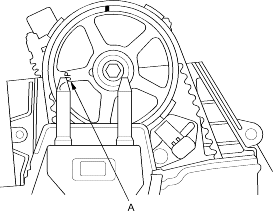
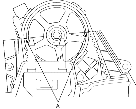
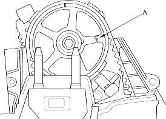

- Rotate the crankshaft 180° counter-clockwise (camshaft pulley turns 90°). The ''UP'' mark (A) on the camshaft pulley should be toward the exhaust side of the head.

- Check and if necessary, adjust the valve clearance on No. 3 cylinder.
- Rotate the crankshaft 180° counter-clockwise to bring No. 4 piston to TDC. TDC marks (A) are visible again.

- Check and if necessary, adjust the valve clearance on No. 4 cylinder.
- Rotate the crankshaft 180° counter-clockwise to bring No. 2 piston to TDC. The ''UP'' mark (A) should be on the intake side of the head.

- Check and if necessary, adjust the valve clearance on No. 2 cylinder.
- Install the cylinder head cover, refer to the '01 Civic Shop Manual on this CD on this CD (see page 6-55).